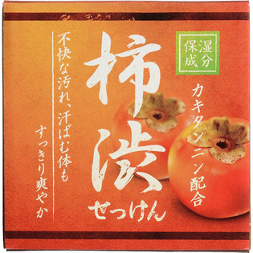

返回列表
产品名称：柿渋配合石けん HYA-SKA

クロバーコーポレーション 柿渋配合石けん HYA-SKA ８０Ｇ
メーカー クロバーコーポレーション
JANコード 4901498125038
商品の特徴
保湿成分柿渋（カキタンニン）配合の石けんです。
- 成分・分量
- 石ケン素地、コカミドプロピルベタイン、カキタンニン、香料、水、PEG-75、エチドロン酸、EDTA-4Na、酸化鉄
- 用法及び用量
- 手のひらで良く泡立て、その泡で顔を包み込むようにマッサージしながらお洗い下さい。その後十分にすすいで下さい。